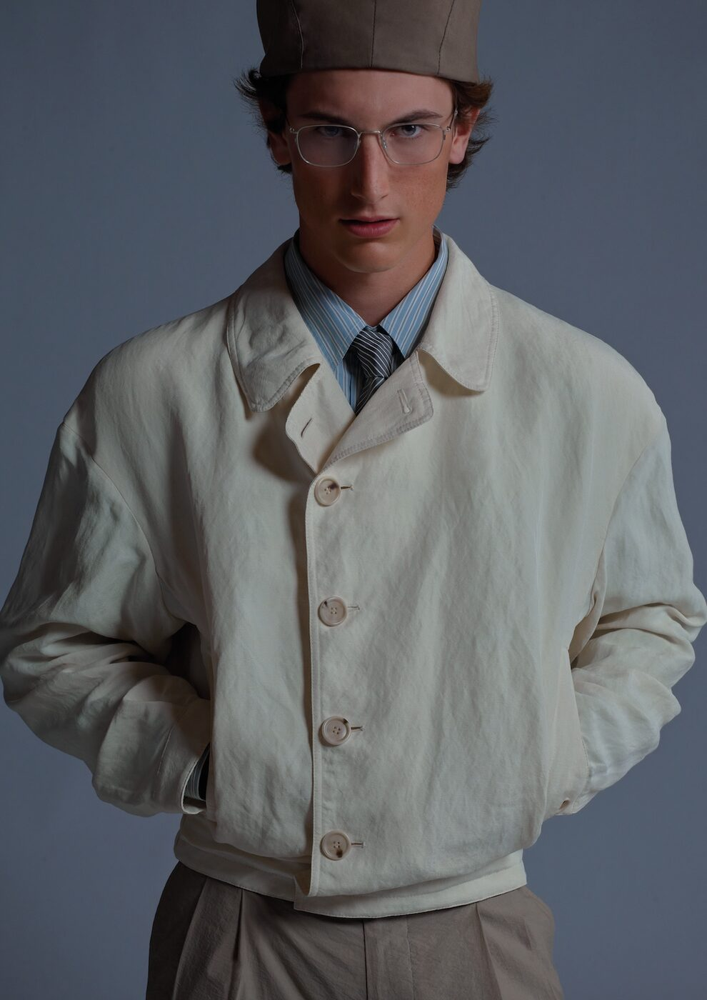

Past Perfect. Future Ready. With those four words, Giorgio Armani introduces the second chapter of Archivio — a project that reaches back into the house’s formidable archive to reproduce thirteen men’s and women’s looks from 1979 to 1994, each one centred on the garment that made Armani Armani: the jacket.
There is a particular kind of courage required to reissue your own work. It invites comparison, courts nostalgia, risks the suggestion that the best days are behind you. But Armani has never been a designer given to sentimentality, and Archivio Chapter Two is not a retrospective. It is, rather, an argument — made in cloth, in cut, in the precise angle of a lapel — that certain ideas are not historical artefacts but living propositions, as relevant to the body that wears them today as they were to the one that wore them forty years ago.
The thirteen looks span a fifteen-year period that represents, by any measure, one of the most consequential runs in modern fashion. In 1979, when the first of these garments was made, Armani was three years into his independent label and already in the process of dismantling everything the Italian menswear establishment held sacred. The padded shoulder, the rigid chest canvas, the armour-like construction that turned a suit jacket into a carapace — all of it was being stripped away, replaced by something softer, lighter, more honest about the body beneath. The women’s jackets followed the same logic: authority without rigidity, power without performance.
The jacket that undressed fashion
It is difficult, from the vantage point of 2026, to appreciate quite how radical this was. The deconstructed jacket is now so thoroughly absorbed into the vocabulary of fashion that it reads as a given rather than an invention. But in the late nineteen-seventies and early eighties, when Armani was removing the lining from jackets and allowing them to drape rather than stand, he was engaged in something genuinely revolutionary. He was not merely changing the way clothes looked; he was changing the way they felt, and in doing so he was changing the relationship between the wearer and the garment. A jacket that moved with the body, that breathed, that acknowledged the human form rather than imposing a silhouette upon it — this was a new idea, and it altered the course of fashion permanently.
The Archivio project, launched in its first chapter last year, takes these pivotal garments and reproduces them with absolute fidelity to the originals. The fabrics are sourced to match the archival specifications. The construction follows the original patterns. The result is not a “reimagining” or an “update” — words that fashion uses when it wants to have its cake and eat it — but a faithful reproduction that allows a new generation to experience these clothes as they were intended to be experienced: on the body, in motion, in the present tense.
A jacket should be like a second skin — you should forget you are wearing it, and yet it should make you feel more yourself than you were before you put it on.
Giorgio ArmaniThe campaign imagery for Chapter Two has been shot by Eli Russell Linnetz, the Los Angeles-based designer and photographer behind the label ERL. The choice is inspired. Linnetz, whose own work occupies a space between California nonchalance and couture ambition, brings a warmth and immediacy to the archival pieces that a more conventional fashion photographer might have missed. His images avoid the museum-vitrine quality that often afflicts archive projects; instead, the jackets appear alive, inhabited, caught in a moment rather than preserved behind glass. There is a looseness to the casting and the styling that feels distinctly contemporary, yet never at the expense of the garments’ integrity.
Legacy in the age of circularity

Photography by Eli Russell Linnetz courtesy of Wallpaper*
The timing of the launch — during Milan Design Week, when the city becomes a stage for conversations about the intersection of design, craft and cultural memory — positions Archivio as something more than a fashion project. It is a statement about heritage and its uses, about the difference between preserving the past and being imprisoned by it. In an industry increasingly preoccupied with circularity and sustainability, the idea of reproducing garments that were designed to last, that were made with the kind of material intelligence that fast fashion has all but abandoned, carries a particular resonance.
There is, too, the unavoidable context of legacy. Giorgio Armani is ninety-one years old. He remains active, present, involved in every aspect of the business that bears his name, but the question of what happens to that business — and to the aesthetic philosophy it represents — is one that the industry asks with increasing frequency and decreasing subtlety. Archivio can be read, in part, as Armani’s own answer to that question: a way of codifying the essential gestures, of establishing which ideas are non-negotiable, of creating a permanent record that any future steward of the house will be able to consult. It is legacy work in the most literal sense, and it is being done with the same precision and lack of sentimentality that has characterised Armani’s entire career.
The thirteen looks in Chapter Two are available at armani.com and in select boutiques worldwide. They are not inexpensive, but neither are they priced as collectors’ items or limited editions designed to generate scarcity. They are, Armani insists, clothes — meant to be worn, meant to age, meant to participate in the daily life of the person who buys them. This is perhaps the most radical aspect of the entire project: the refusal to treat archive garments as relics, the insistence that a jacket made in 1982 has something urgent to say to a person getting dressed in 2026.
Past Perfect. Future Ready. The tagline is characteristically Armani — concise, balanced, devoid of the breathless hyperbole that fashion so often mistakes for conviction. It suggests that the past is not a place to return to but a foundation to build from, that the best of what has been made can still serve as a template for what is yet to come. In a season crowded with new beginnings and fresh appointments, there is something deeply reassuring about a designer who looks back at his own work and says, simply: this still stands.